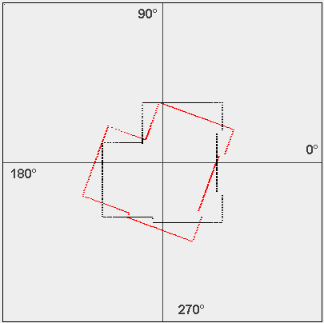

What is scan matching?
Scan matching is a process by which two data sets are aligned leading to an accurate estimate of the position of the robot.
These data sets are usually in the form of 2D laser range scans or 3D point clouds.
A point cloud is a set of 2D/3D points. The points usually defined by (X,Y) or (X,Y,Z) coordinates, are typically intended to be representative of the external surface of an object.
See the figure below for an example of 2D point cloud data.


The figure on the left shows the real map while the one on the right shows the 2D point cloud. The robot is in black and the obstacles are marked. The 2D point cloud is in black. The 2D point cloud is a set of (r,θ) plotted in an XY plane as (rcosθ,rsinθ). The r is the range to an obstacle along the θ wrt to robot orientation.
So, basically in scan matching we take two different sets of scans from two different robot poses. Then we try to align them. This leads to an accurate estimate of the robot's new position. How, is discussed in the theory section?
The two scans are essentially 2 different view points of the same environment. One representation differs from the other by a Rotation and a translation.
You can obtain the original position of the robot by doing an inverse of these transformations.
In the figure below you can see the result of two different scans.
They also appear translated or rotated due to an error or noise in the origin of the reference frame. This case is more apt to a robotic setting. For example let the predicted reference frame of the robot be P(in red color) while the actual reference frame be A(in black color) as shown in the figure on the left.
We have an initial scan taken from our actual position A. The position of A in a global co-ordinate system G is unknown. The black scan is the actual scan.
The dots in the scan represent the obstacles.
Now, based on our estimate of where the robot is and the information of the actual scan, we project from our predicted pose the actual scan obtaining the projected scan (shown as red in the figure). From the orientation of the projected scan with respect to the original scan, we get, an idea of where the robot should have been for such a scan to have been taken.
If the position of A was known in the co-ordinate frame G, then the red scan would co-incide with the black scan, and P would coincide with A.
But, since A is not known with respect to G, on projecting the actual (black) scan from P we obtain the red scan.
Using the difference in orientation and location of the 2 scans, scanmatching can then find the transformation from P to A thereby correcting the error in the robot’s predicted pose. This error arises precisely due to errors in the robot’s motion.

What are the causes of this error that leads to the robot identifying its pose with P than with A?
The reasons are quite a few, some of which are enumerated below:
a) The left wheel and right wheel do not move with the same velocity while moving along a straight line leading to a drift in the robot motion even with the best PID controller onboard the robot.
b) The left and
right wheel diameters are not precisely equal, which is one of the causes for a.
c) The problem is accentuated when the robot rotates, for the robot is never able to rotate precisely to the commanded value. For example when asked to
rotate 10 degrees it may turn by 9 or 11 degrees. The error in rotation followed by a translation leads to the robot to wrong locations rather than the desired/predicted poses.

So, from the two different robot poses we have two different scans
Let's call the initial scan SA and the position it was taken from as A.
Similarly, let SP and P represent the projected scan and the predicted pose respectively.
We can represent A in terms of P with the following equation:
A = R x P + T
Here, R is the rotation matrix and T is the translation vector.
In the figure below, let P represent the predicted pose of the robot (in red) and A represent the actual position of the robot (in black).

Now, what we seek to find is the values of R and T that minimize the expression |A-P|2.
Solving for these minimization results we get:
is the covariance of the x-coordinates of points in the red scan (predicted scan) and y co-ordinates of points in the black scan(actual scan from the predicted pose). The summation is over the n corresponding points.
Similarly and so on and so forth. The bar over the x or y represents the mean of that component over n values.
But, how do we know which points in each of the scans refer to the same object?
There are correspondence rules to determine which 2 points in the 2 scans are related. We explain only one here. It is also the one used in the Virtual Lab.
Closest-Point Rule
For each point in our new scan we iterate through all the points in our initial scan and find the one closest to it.

The objective of this virtual lab experiment is to find the transformation between the actual and predicted pose of the robot by matching the predicted range scan and the actual range scan through a scan matching formulation. The reasons for the accrued error between the predicted and actual pose are due to the reasons covered in Introduction. The transformations are in a plane, which means that the rotation is only due to yaw of the robot (rotation about the z axis) and the translations are only along x and y.

Information on how to use the Experiment:
1. Multiple maps are provide here.
2. 2D laser range finder is used here.
3.Refer to image above showing the two panels used to display data.
4. Color legend for Panel 1
| Black |
Real Position |
| Red |
Predicted Position(Real Postion + Error) |
| Green |
Corrected Position |
5. Similarly in Panel 2 same colors used to show corresponding range scans.
| Black |
Scan from Real Postion |
| Red |
Scan from Predicted Position |
| Green |
Scan from Corrected Position |
6. Use the three slider bars to set the corresponding error in (x,y,θ) of Robot predicted pose.
7. Certain Predefined cases are also given. Else click on the panel 1 to set Robot real pose.
8. Then hit Run to display the results.
9. Now you can use the slider bar to display results after certain number of iterations of the scan matching algorithm.
10.As you move the slider from 0 to 10 you find how the green corrected scan moves from red to black simultaneously as the robot pose gets corrected from the predicted position (red circle) to the actual position (black circle). The corrected robot position is shown as the center of the green circle.


- What in your own words is the principal difference between the experiment 4 on fast localization and the experiment 6 on scan matching?
- Which of the experiments 4 or 6 attempt a global localization while which of it attempts a local localization?
- Enumerate what factors could lead to a less than satisfactory performance of scan matching?

Papers
- Feng Lu and Evangelos Milios, "Robot Pose Estimation in Unknown Environments by matching 2D Range Scans" -Journal of Intelligent and Robotic Systems, 1998